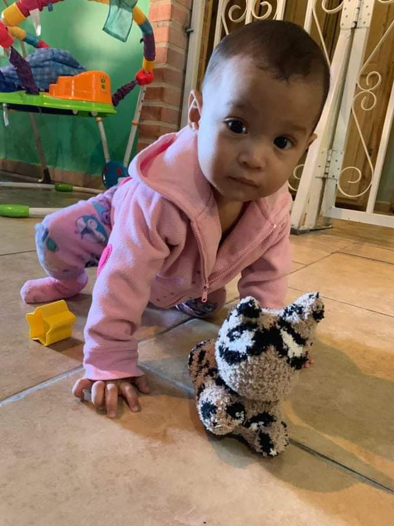
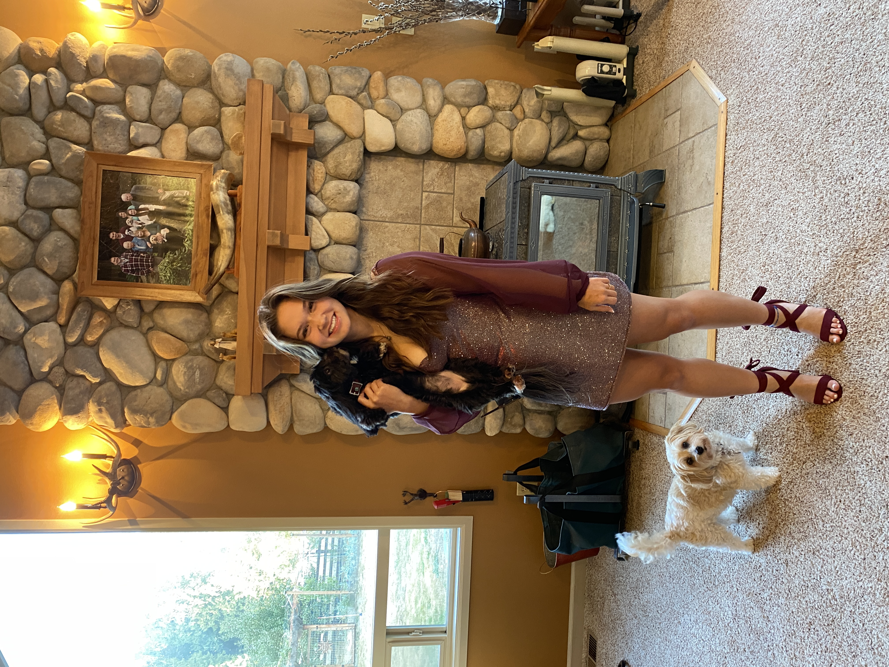
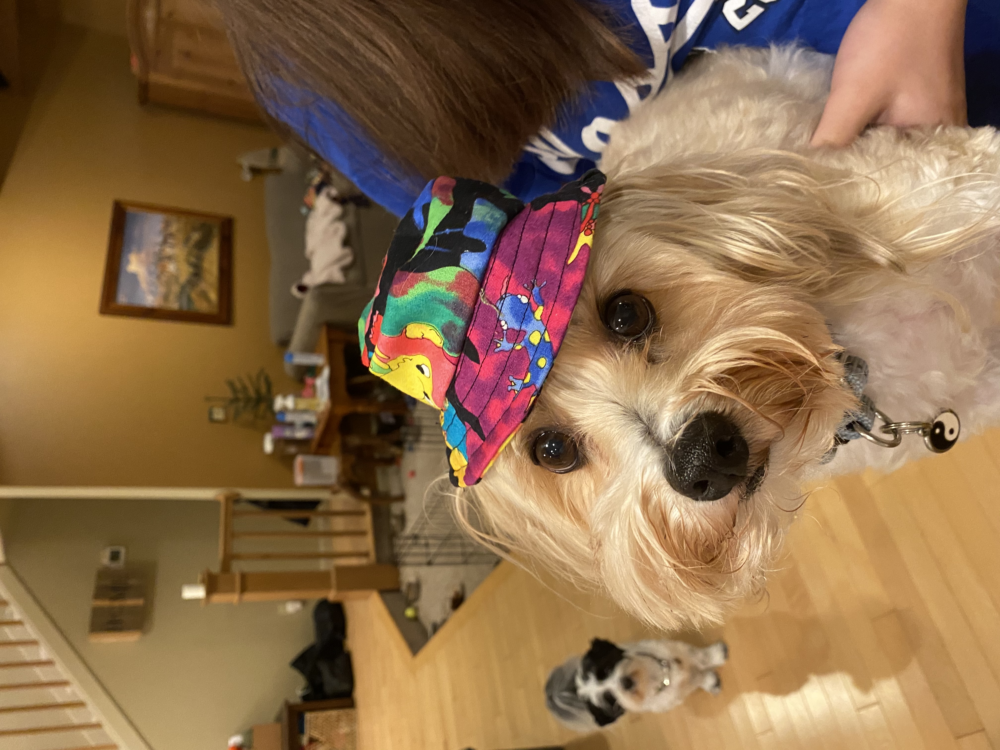
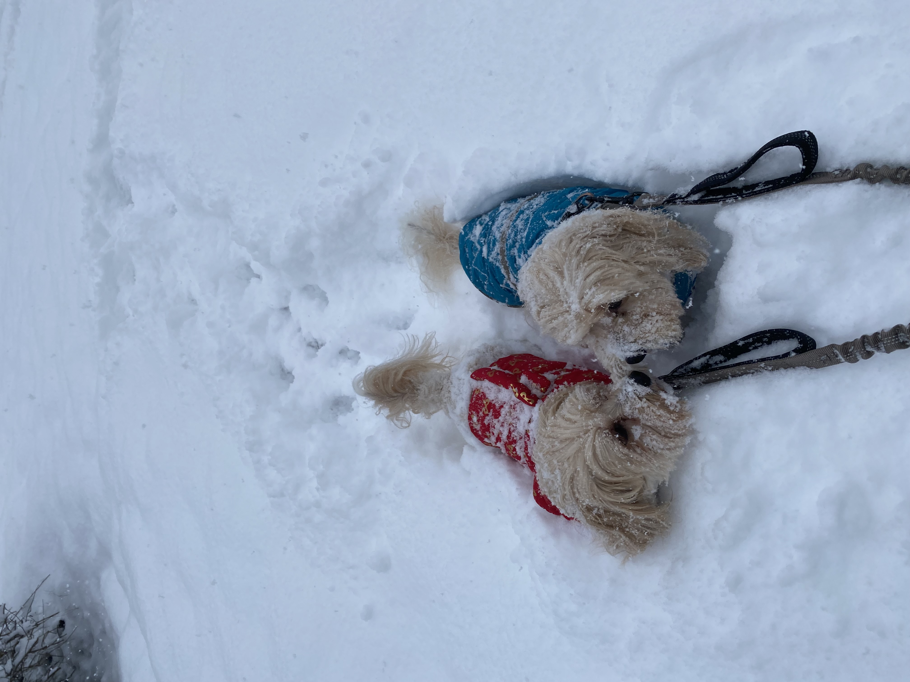
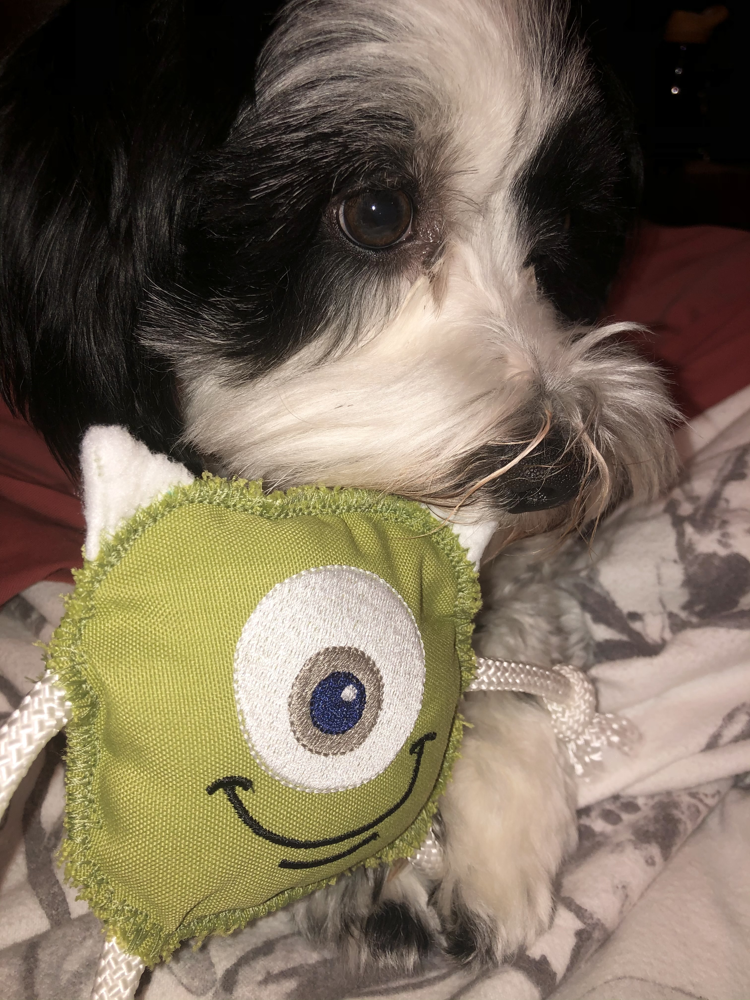
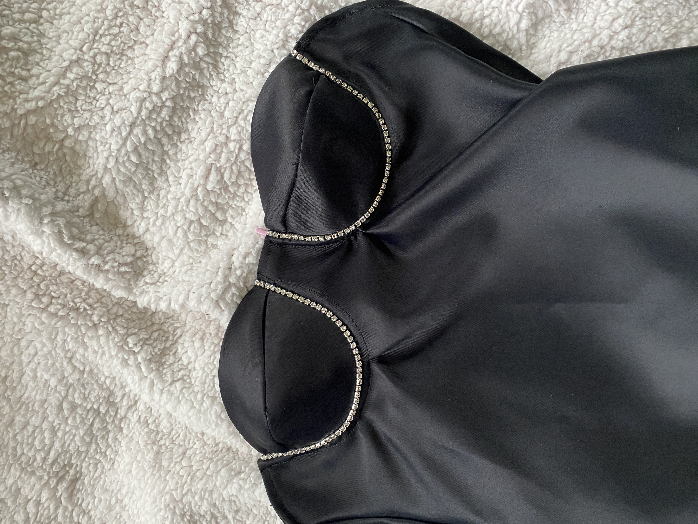

The SharpOriginals Sewing Page
Gallery
Here are some of my sewing creations over the years!
If you feel extra inspired, feel free to see more of my pieces at my Etsy shop, SharpOriginals!

Here is a baby from Ophange Emmanuel in Honduras. Using fuzzy socks, I created stuffed animals to mail and recieved this adorable picture in return.

This is my junior year Homecoming dress!

I learned how to make bucket hats a few days prior to this photo, so I figured that by resizing the pattern, I could make pet-sized hats too.

Using up-cycled toddler vests, I created cute clothing for pets that can also keep them warm in the winter.

This is one of my dogs, Maya, quality-testing a dog toy prototype that I was experimenting with.

This is an in-process photo of the Prom dress that I made for myself.